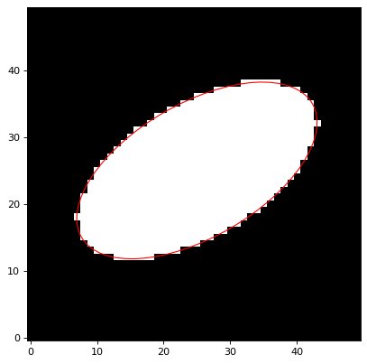

Ellipse2D¶
-
class
astropy.modeling.functional_models.Ellipse2D(amplitude=1, x_0=0, y_0=0, a=1, b=1, theta=0.0, **kwargs)[source]¶ Bases:
astropy.modeling.Fittable2DModelA 2D Ellipse model.
- Parameters
- amplitude
float Value of the ellipse.
- x_0
float x position of the center of the disk.
- y_0
float y position of the center of the disk.
- a
float The length of the semimajor axis.
- b
float The length of the semiminor axis.
- theta
floatorQuantity, optional The rotation angle as an angular quantity (
QuantityorAngle) or a value in radians (as a float). The rotation angle increases counterclockwise from the positive x axis.
- amplitude
- Other Parameters
- fixed
adict, optional A dictionary
{parameter_name: boolean}of parameters to not be varied during fitting. True means the parameter is held fixed. Alternatively thefixedproperty of a parameter may be used.- tied
dict, optional A dictionary
{parameter_name: callable}of parameters which are linked to some other parameter. The dictionary values are callables providing the linking relationship. Alternatively thetiedproperty of a parameter may be used.- bounds
dict, optional A dictionary
{parameter_name: value}of lower and upper bounds of parameters. Keys are parameter names. Values are a list or a tuple of length 2 giving the desired range for the parameter. Alternatively, theminandmaxproperties of a parameter may be used.- eqcons
list, optional A list of functions of length
nsuch thateqcons[j](x0,*args) == 0.0in a successfully optimized problem.- ineqcons
list, optional A list of functions of length
nsuch thatieqcons[j](x0,*args) >= 0.0is a successfully optimized problem.
- fixed
Notes
Model formula:
\[\begin{split}f(x, y) = \left \{ \begin{array}{ll} \mathrm{amplitude} & : \left[\frac{(x - x_0) \cos \theta + (y - y_0) \sin \theta}{a}\right]^2 + \left[\frac{-(x - x_0) \sin \theta + (y - y_0) \cos \theta}{b}\right]^2 \leq 1 \\ 0 & : \mathrm{otherwise} \end{array} \right.\end{split}\]Examples
import numpy as np from astropy.modeling.models import Ellipse2D from astropy.coordinates import Angle import matplotlib.pyplot as plt import matplotlib.patches as mpatches x0, y0 = 25, 25 a, b = 20, 10 theta = Angle(30, 'deg') e = Ellipse2D(amplitude=100., x_0=x0, y_0=y0, a=a, b=b, theta=theta.radian) y, x = np.mgrid[0:50, 0:50] fig, ax = plt.subplots(1, 1) ax.imshow(e(x, y), origin='lower', interpolation='none', cmap='Greys_r') e2 = mpatches.Ellipse((x0, y0), 2*a, 2*b, theta.degree, edgecolor='red', facecolor='none') ax.add_patch(e2) plt.show()
Attributes Summary
This property is used to indicate what units or sets of units the evaluate method expects, and returns a dictionary mapping inputs to units (or
Noneif any units are accepted).Names of the parameters that describe models of this type.
Methods Summary
evaluate(x, y, amplitude, x_0, y_0, a, b, theta)Two dimensional Ellipse model function.
Attributes Documentation
-
a= Parameter('a', value=1.0)¶
-
amplitude= Parameter('amplitude', value=1.0)¶
-
b= Parameter('b', value=1.0)¶
-
input_units¶
-
param_names= ('amplitude', 'x_0', 'y_0', 'a', 'b', 'theta')¶ Names of the parameters that describe models of this type.
The parameters in this tuple are in the same order they should be passed in when initializing a model of a specific type. Some types of models, such as polynomial models, have a different number of parameters depending on some other property of the model, such as the degree.
When defining a custom model class the value of this attribute is automatically set by the
Parameterattributes defined in the class body.
-
theta= Parameter('theta', value=0.0)¶
-
x_0= Parameter('x_0', value=0.0)¶
-
y_0= Parameter('y_0', value=0.0)¶
Methods Documentation
{kind=link}
{kind=link}